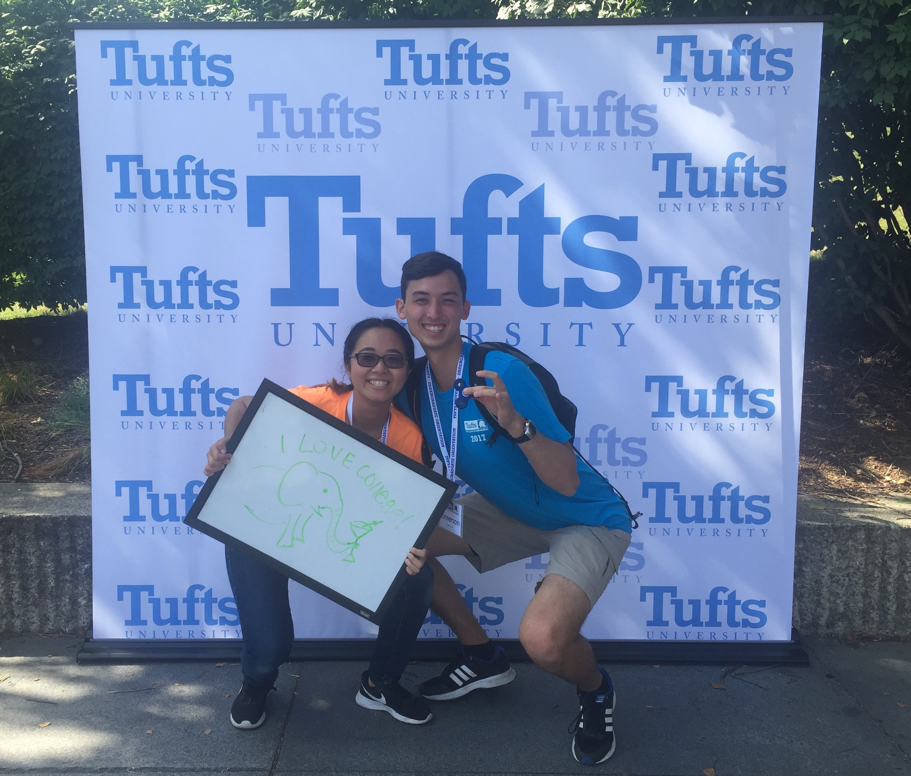

Take a Campus Tour!
Enjoy a walking tour of state-of-the-art campus facilities such as Tisch Library, Tisch Gym, and the Tisch College of Civic Life. Get a history lesson from a trained campus tour guide on as many things as they can remember without having checked the handbook for a while. You won't believe how tragic our mascot Jumbo's story actually is!
Eat Lunch with a Jumbo!
Pay for my lunch! In return you get to watch me eat some amazing breakfast food while I talk with my mouth full about what I'm studying, how Hill Hall was actually a great first-year dorm, and how incredibly interdisciplinary Tufts and how that is unique from other schools somehow. You are allowed to eat too.

Meet Active Members of the Community!
You will be able to see me interact with various people that at least like to say hi to me in passing, on a good day. Otherwise you might not meet anyone. If you tell me what you're interested in studying, I will promise you the emails of anyone I know in that major and then I might forget that I wrote your email address in my notes app, but I will see it eventually.